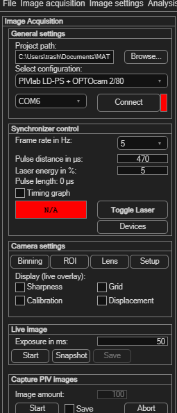

Capturing images from a camera
PIVlab can acquire PIV image pairs directly from a connected camera, and — with PIVlab's own SimpleSync synchronizer hardware — trigger and time a pulsed laser to match. This is a hardware-dependent feature; this page covers the shape of the workflow rather than settings for any specific camera or synchronizer model.
Open via Image acquisition → Capture PIV images, or the Acquire images button in the Input data panel. This requires MATLAB R2019b or newer.

The general workflow
- Select configuration — choose the camera + synchronizer combination you have (e.g. PIVlab LD-PS + OPTOcam 2/80). A demo option (Webcam demo (no synchronizer)) lets you try the feature without special hardware.
- Set your Project path — where images and configuration get saved.
- If using a SimpleSync synchronizer, select its COM port and click Connect.
- Configure synchronizer settings: Frame rate, Pulse distance (laser pulse spacing in µs), and Laser energy. A Timing graph option visualizes camera/laser timing, and Toggle Laser fires it manually.
- Under Camera settings, use Binning, ROI, Lens and Setup to configure the camera itself, and optionally overlay Sharpness, Grid, Calibration or Displacement guides on the live view.
- Under Live image, set an Exposure and click Start to preview, or Snapshot to grab a single still.
- Under Capture PIV images, tick Save to actually write the captured images to disk — this also unlocks the Image amount field, which stays disabled while Save is off. Set the amount, then click Start to begin capturing PIV image pairs (this also fires the laser via the synchronizer). Abort stops an in-progress capture.
A separate live-view Start button is available for camera calibration image capture, independent of the main PIV capture.
Trying it with just a webcam
You don't need a PIV camera or a synchronizer to get a feel for image acquisition — the Webcam demo (no synchronizer) configuration runs the whole capture workflow against an ordinary USB webcam:
- Select Webcam demo (no synchronizer) from Select configuration. PIVlab looks for a connected webcam; if none is found, or the required free MATLAB Support Package for USB Webcams isn't installed, it tells you so.
- Everything synchronizer- and laser-related (frame rate, pulse distance, laser energy, timing graph, external trigger) and camera-specific (binning, ROI, lens control) is automatically disabled — there's no hardware for those to control.
- Under Live image, click Start to see the webcam's live feed, or Snapshot to grab a single still.
- Under Capture PIV images, tick Save, set an Image amount, and click Start to capture a demo PIV image sequence — no laser or synchronizer involved.
It won't produce meaningful PIV data (a webcam isn't a PIV camera, and there's no pulsed laser), but it's a quick, hardware-free way to see how the capture panel behaves before setting up real equipment.